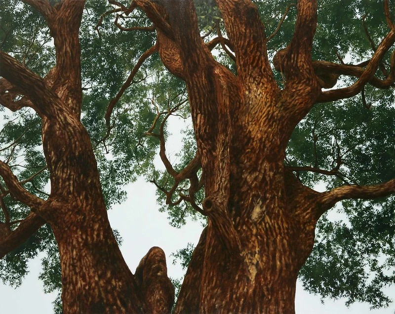

Zhi-Qing Liang


Swipe sideways, one work at a time
In collections
Works in collections
Compiled from the collection records in the artist’s portfolio; collectors are identified by sector only.
- Yellow Lilies-2, 2012Private collection (art dealing)
- Guang Bian No.24, 2017–2018Private collection (traditional industry)
- Ryukin No.01, 2023Private collection (traditional industry)
 Millennial Splendour-1, 2012Private collection (land development)
Millennial Splendour-1, 2012Private collection (land development) Millennial Splendour-4, 2012Private collection (land development)
Millennial Splendour-4, 2012Private collection (land development) Oriental Lilies, 2011Private collection (legal profession)
Oriental Lilies, 2011Private collection (legal profession) White Roses-1, 2011Private collection (steel industry)
White Roses-1, 2011Private collection (steel industry) Pink-Orange Roses-1, 2011Private collection (performing arts)
Pink-Orange Roses-1, 2011Private collection (performing arts) Banana GrovePrivate collection (technology industry)
Banana GrovePrivate collection (technology industry) Acacia HillPrivate collection (manufacturing)
Acacia HillPrivate collection (manufacturing)- Magenta LilyPoly Auction Hong Kong, 2020
 Take a Walk No.36, 2007–2009Poly Auction Hong Kong, 2020
Take a Walk No.36, 2007–2009Poly Auction Hong Kong, 2020 Take a Walk No.28, 2009Private collection (legal profession)
Take a Walk No.28, 2009Private collection (legal profession) Take a Walk No.26, 2009Private collection (medical profession)
Take a Walk No.26, 2009Private collection (medical profession) Take a Walk No.1, 2009Private collection (construction)
Take a Walk No.1, 2009Private collection (construction) Take a Walk No.5, 2009Private collection (construction)
Take a Walk No.5, 2009Private collection (construction) Take a Walk No.13, 2009Private collection (construction)
Take a Walk No.13, 2009Private collection (construction) Take a Walk No.14, 2009Private collection (construction)
Take a Walk No.14, 2009Private collection (construction) Take a Walk No.17, 2009Private collection (construction)
Take a Walk No.17, 2009Private collection (construction) White Roses-2, 2011Private collection (food industry)
White Roses-2, 2011Private collection (food industry)
Millennial Splendour-3, 2012Private collection (manufacturing) Guang Bian No.21, 2018Private collection (art dealing)
Guang Bian No.21, 2018Private collection (art dealing) Banana Plant, 2011Private collection (medical profession)
Banana Plant, 2011Private collection (medical profession) Cloud, Mountain, Water 2010Museum collection
Cloud, Mountain, Water 2010Museum collection
你不應該對我好奇，而是對自己好奇。You shouldn’t be curious about me — be curious about yourself.
Zhi-Qing Liang, quoted in CommonWealth Magazine (source to be confirmed; translation for review)Where to begin
- How long since you truly looked at a flower?Stillness
 Did you notice the light today?Thinness (light)
Did you notice the light today?Thinness (light) When you walk, what makes you stop?Walking along
When you walk, what makes you stop?Walking along- Which two selves live in you at once?Oscillation
 When do you least need to pretend?Being true
When do you least need to pretend?Being true
No need to answer. You can also see all the works. (The five entrances come from the five keywords of the proposal; the questions are samples, pending confirmation by Mr. Liang)
Process
Painting in progress
Making, life, talks: several series of films, hosted on a YouTube channel and linked from here. (Channel in preparation)
Book
The artist’s book
His own book is introduced here: title, cover, contents and the dates of its launch events.
(Title, cover, publication details and launch dates to be provided by Mr. Liang)
News
- 2024ExhibitionAbiogenesis (偶發) — watercolour exhibition and talk
- 2024TalkOn painting (two talks)
- 2024NewsRti programme: the artist on life and work (in Chinese)
(Book launches, exhibitions and talks will each have their own page; content to be provided by Mr. Liang)
Thirty years, series by series
- 1991–1995Psyche & Eros情慾思維5 works
- 1996–1998Interior Scene內景8 works
- 1999State of Heart心象3 works
- 2000–2014Realism (Zhi Xiang)植相7 works
- 2007–2009Take a Walk隨行7 works
- 2010Flowing流動8 works
- 2010Cloud, Mountain, Water雲山水3 works
- 2011–2012Flower — Form and Colour花－形色6 works
- 2012Millennial Splendour千年之華2 works
- 2017–2018Guang Bian (Light Shift)光變10 works
- 2023 – ongoingRyukin (working title)琉金光燦1 work
- 2024Abiogenesis偶發 abiogenesis13 works
Three distances
Far｜Index
Step back and see the whole wall. Filter by realist, abstract, or works available for enquiry.
Open the indexNear｜Picture only
On any work page, choose “Picture only”: the interface steps back and only the painting remains.
Try it